| 日付 | 2016年7月24日（日） |
|---|---|
| 山域 | 奥秩父 |
| メンバー | 家族（妻、長女・5歳、長男・3歳） |
| 山行形態 | 子連れ日帰り |
| アクセス | 車 |
| ルート (Map) | 駐車場 (8:14) - (8:55) 鋏岩 - (9:48) 太刀岡山 - (10:02) 北太刀岡山 - (10:14) 太刀岡山 (11:00) - (11:23) 鋏岩 - (12:01) 駐車場 |
本日は1ヶ月ぶりの山行。真夏で暑いので涼しい山を探してみる。
全般的に天気は良くなさそうだが、山梨方面は晴れそうだったため、
行先を山梨にある曲岳～黒富士に決めて出発する。
曲岳に向かう車から見える景色はどんより。
山に登っても山頂は完全に雲の中になってしまいそうだ。
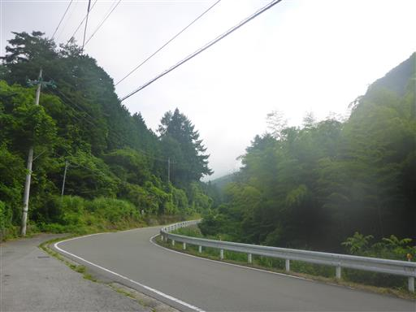
道中、太刀岡山の登山口駐車場があったため、
急遽目的地を変更してこちらに登ることにする。標高850m。
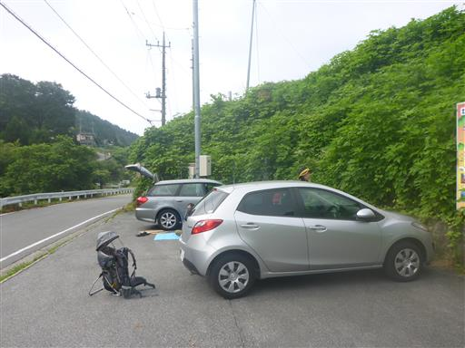
太刀岡山方面には雲がかかってなさそうだ。
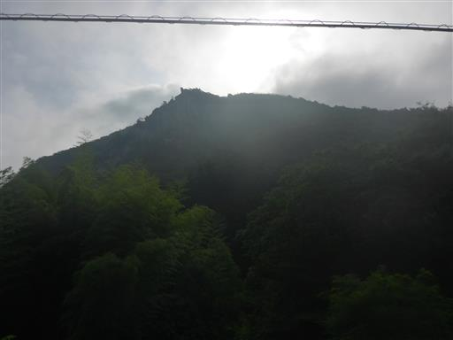
車道を登って登山口を目指す。
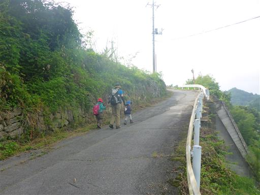
登山口に到着。民家脇の細い道が入口だ。
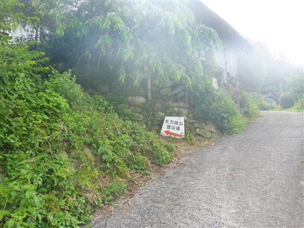
しばらく登ると大きな岩が見えてくる。
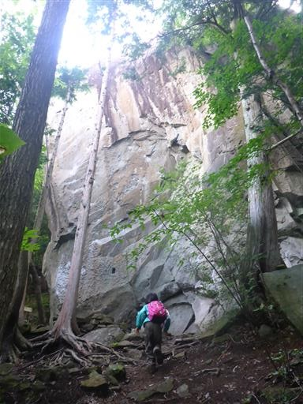
岩の下部に祠が祀られている。
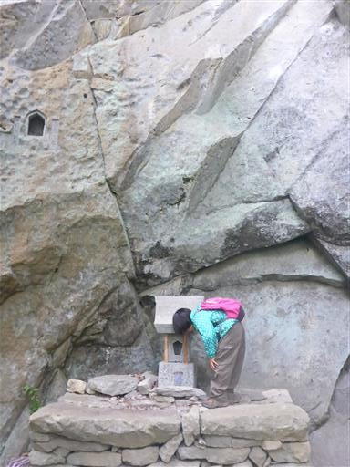
岩の上部にも祠が彫られている。
息子は歩くのを嫌がり、早々にキャリアに乗る。

しばらく登ると再び大岩に到着。
登山口から見えた鋏岩だ。岩に登ってみようとしたが難しいので自重。
子供達が登りたいと言って付いてくる…

息子がキャリアから下りたついでに歩き始める。
乗ったり下りたりで面倒だ…
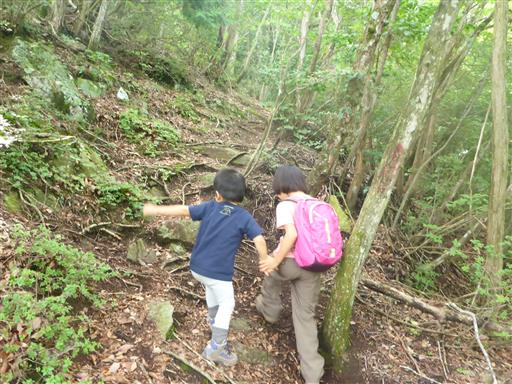
何の変哲もない登山道が続く。
しかし道はずっと急斜面が続き歩きにくい。
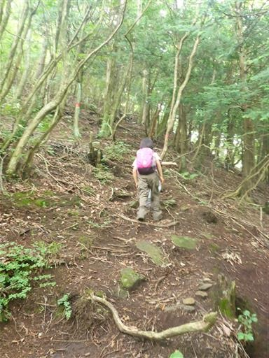
急斜面を登りきると太刀岡山に到着する。標高1295m。
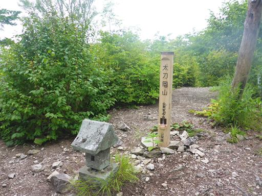
天気が悪く展望は無い。
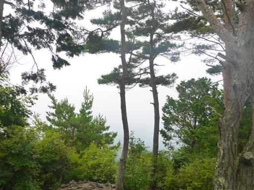
まだ時間が早いため北太刀岡山まで足を延ばすことにする。
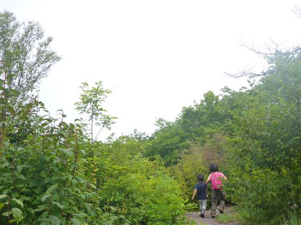
北太刀岡山に到着。小さな標識がある。
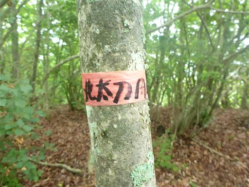
樹林に囲まれ展望は全くない。
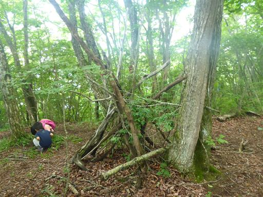
太刀岡山まで戻って昼食をとる。
少し雲が取れて茅ヶ岳が見えてくる。
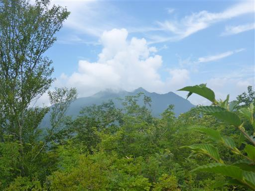
昼食を取ったら下山開始。
急斜面が続くため、息子と手を繋いで降るのは結構大変だ。
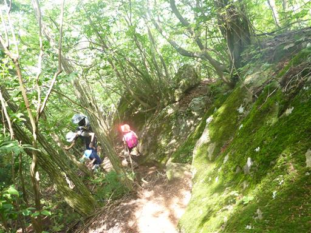
足元に何かの糞が落ちている。
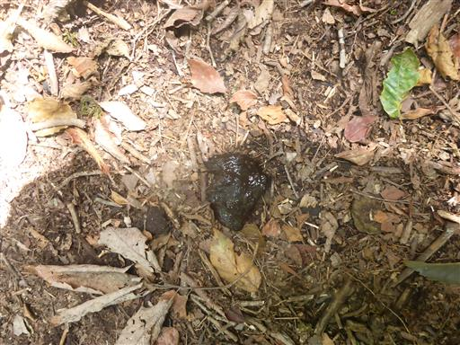
鋏岩に到着。下山時も子供たちは岩に登りたがる。
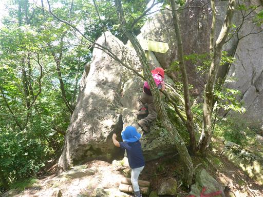
さらに下の大岩に到着。ロッククライミングを楽しんでいる人がいる。
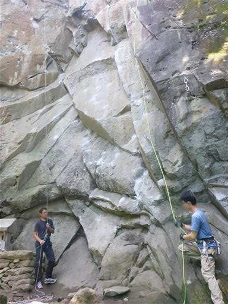
無事下山する。息子は結局ほとんどの道を歩ききった。
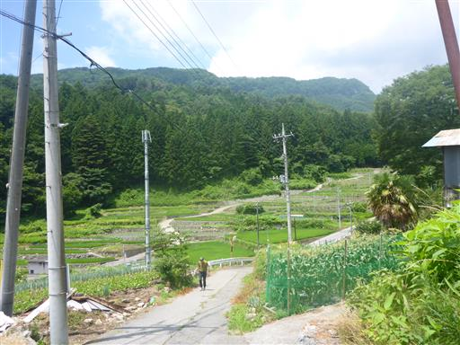
打ち捨てられた民家に大きな水車がある。
何に使われていたのだろうか？
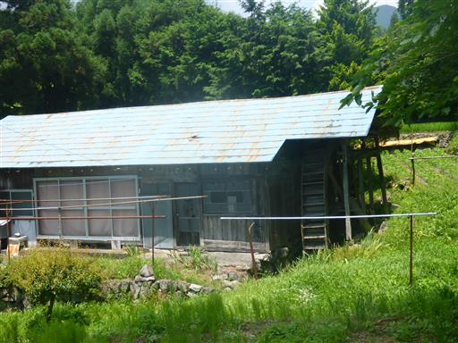
太陽の位置が変わり、駐車場からは太刀岡山の鋏岩がきれいに見えている。
暑くはなかったが、特徴の乏しい山だった。
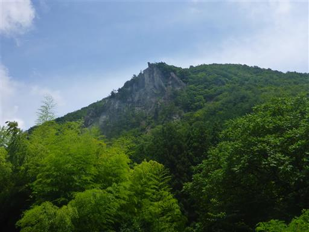